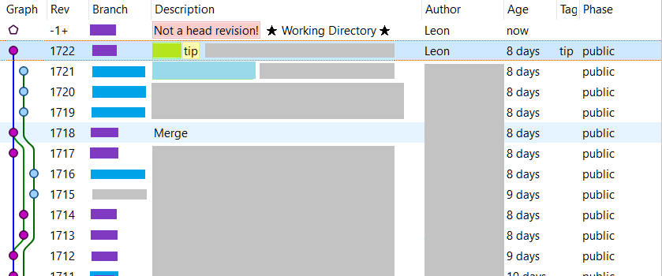

How to recover when a rebase goes wrong?
Summary:
When attempting
> hg pull --rebase
If you get an error message such as:
transaction abort!
rollback completed
I recommend the following steps...
- Make a local backup of your repo, in another folder.
- Perform any
hg unbundlecommands that the error message recommends - Try
hg rebase --continue - If that doesn't work, try
hg rebase --abort
I was worried I would lose my commits when I did this, but I did not. The backup of the repo (step 1) also meant I could try other things if this had failed.
Here's the complete story of what happened (may include error messages that you also experience)
Background story
I was attempting a rebase....
> hg pull --rebase
pulling from \\Reposerver\MonoRepo
searching for changes
adding changesets
adding manifests
adding file changes
added 40 changesets with 93 changes to 70 files (+1 heads)
new changesets 2834af4f058c:9dadf17bcf7c
rebasing 1723:8c87dc84658a "Some changes1"
rebasing 1724:54388b19545b "Some changes2"
rebasing 1725:ccb07e7d5eb2 "Some changes3"
rebasing 1726:a014168bc3e8 "Some changes4"
rebasing 1727:bc5366e987f2 "Some changes5"
saved backup bundle to C:\Source\MonoRepo\.hg\strip-backup/8c87dc84658a-98774a32-rebase.hg
transaction abort!
rollback completed
strip failed, backup bundle stored in 'C:\Source\MonoRepo\.hg\strip-backup/8c87dc84658a-98774a32-rebase.hg'
strip failed, unrecovered changes stored in 'C:\Source\MonoRepo\.hg\strip-backup/8c87dc84658a-3ac4a696-temp.hg'
(fix the problem, then recover the changesets with "hg unbundle 'C:\Source\MonoRepo\.hg\strip-backup/8c87dc84658a-3ac4a696-temp.hg'")
abort: C:\Source\MonoRepo\.hg/store\data/_folder/_project_alpha._tests/_fakes_assemblies/_fakesconfig.i: The process cannot access the file because it is being used by another process
The most pertinent parts are:
(fix the problem, then recover the changesets with "hg unbundle 'C:\Source\MonoRepo\.hg\strip-backup/8c87dc84658a-3ac4a696-temp.hg'")
And
"The process cannot access the file because it is being used by another process"
...I think the file wasn't being used by me or any of my apps. Most likely it was onedrive that got its mits on the thing. One Drive shouldn't lock files though. So maybe not One Drive. But my VS instance wasn't touching that area or anywhere near it. No virus scanner running.
Regarding this:
strip failed, backup bundle stored in 'C:\Source\MonoRepo\.hg\strip-backup/8c87dc84658a-98774a32-rebase.hg'
strip failed, unrecovered changes stored in 'C:\Source\MonoRepo\.hg\strip-backup/8c87dc84658a-3ac4a696-temp.hg'
Here's what I get from stat at the moment....
> hg stat
warning: ignoring unknown working parent f6a8bec6d092!
Looking in tortoise it's quite ugly.
see 
The current working directory is disconnected from all before it and has a big red "not a head revision" tag.
The revision prior to that is from 8 days ago - it's my last push - i.e. the point the rebase would've had to "roll back" to. Missing from this graph is everyone else's commits in those 8 days, and my local commits.
I ran:
hg recover 'C:\Source\MonoRepo\.hg\strip-backup/8c87dc84658a-98774a32-rebase.hg'
It said:
adding changesets
adding manifests
adding file changes
added 45 changesets with 403 changes to 360 files
new changesets 2834af4f058c:f6a8bec6d092
(run 'hg update' to get a working copy)
Which looked promising!!
Looking in tortoise again -- it looked good.
Latest commit was 11 minutes old, was the work i'd done. and it was rebased to be built on top of other people's commits from 6 hours ago.
In line with the recommendation I ran:
hg update
but the response was:
abort: rebase in progress
(use 'hg rebase --continue' or 'hg rebase --abort')
Hmm. So I tried the first suggestion:
hg rebase --continue
But it said:
abort: cannot continue inconsistent rebase
(use "hg rebase --abort" to clear broken state)
I tried to rebase again....
> hg pull --rebase
abort: rebase in progress
(use 'hg rebase --continue' or 'hg rebase --abort')
At this point I felt like I was in a text adventure game.
I tried to unbundle that other .hg file in strip-backup that was mentioned above:
> hg unbundle 'C:\Source\MonoRepo\.hg\strip-backup/8c87dc84658a-3ac4a696-temp.hg'
adding changesets
adding manifests
adding file changes
added 0 changesets with 0 changes to 360 files
(run 'hg update' to get a working copy)
In line with the recommendation I ran:
hg update
but the response was:
abort: rebase in progress
(use 'hg rebase --continue' or 'hg rebase --abort')
In other words: no improvement.
I ran a verify:
>hg verify
checking [===================> ] 1688/18825 07s
It took a while and no result, i.e. it found no issues...
>hg verify
checking changesets
checking manifests
crosschecking files in changesets and manifests
checking files
18825 files, 1768 changesets, 25631 total revisions
Running hg update again:
> hg update
but the response was:
abort: rebase in progress
(use 'hg rebase --continue' or 'hg rebase --abort')
I tried
> hg debugcheckstate
but still:
> hg update
abort: rebase in progress
(use 'hg rebase --continue' or 'hg rebase --abort')
So I made a copy of my repo in
C:\apps\Nimble\MonoRepo
...so that I could try hg rebase --abort (which might lose my changes)
Before doing that I had a poke around in the .hg folder.
Look at these files....
Mode LastWriteTime Length Name
---- ------------- ------ ----
d----- 27/09/2018 10:19 PM cache
d----- 2/08/2018 10:33 AM git
d----- 28/09/2018 8:51 AM store
d----- 27/09/2018 10:07 PM strip-backup
-a---- 9/06/2017 3:07 PM 57 00changelog.i
-a---- 26/02/2018 11:29 AM 0 bookmarks
-a---- 16/07/2018 3:48 PM 6 branch
-a---- 25/09/2018 3:58 AM 0 cur-message.txt
-a---- 13/07/2018 4:11 PM 1367419 dirstate
-a---- 16/07/2018 3:45 PM 180 hgrc
-a---- 27/09/2018 10:07 PM 50 last-message.txt
-a---- 27/09/2018 10:07 PM 705 rebasestate
-a---- 9/06/2017 3:07 PM 33 requires
-a---- 7/09/2018 3:27 PM 115 thgstatus
-a---- 26/02/2018 11:29 AM 0 undo.backup.bookmarks
-a---- 13/07/2018 4:11 PM 1367419 undo.backup.dirstate
-a---- 27/09/2018 10:19 PM 0 undo.bookmarks
-a---- 27/09/2018 10:19 PM 5 undo.branch
-a---- 27/09/2018 10:19 PM 14 undo.desc
-a---- 13/07/2018 4:11 PM 1367419 undo.dirstate
The file 00changelog.i just says:
dummy changelog to prevent using the old repo layout
The file branch says just
LASERS
...which is the current branch i'm on
And hgrc is my repo settings such as the remote location.
The file last-message.txt holds a copy of the last commit message i wrote. Makes it easy to reuse i guess.
cat undo.desc tells me:
1768
unbundle
and rebasestate is probably our culprit. Its content in full:
bc5366e987f2d3de6039d08ce5f124b013bc889f
0000000000000000000000000000000000000000
0
0
0
8c87dc84658a144f80526d50a48bfc382059c194:918fe6082c1416e890cd217f5ca7b57337319dfd:9dadf17bcf7ce1295bccef241d07b0adc316e872
54388b19545bc775818ddbae26ad6d0cac35127d:18827d00a088068c7e123c7049dddcbbcac43b9c:9dadf17bcf7ce1295bccef241d07b0adc316e872
ccb07e7d5eb2fedb8fe7801da0e7f5f442269ceb:220059d4d0319ae93b486c5b3982d81563d56048:9dadf17bcf7ce1295bccef241d07b0adc316e872
a014168bc3e8724e373086bc3519940f95dbbc0a:c471776b590c2c92ecb63db72adc116661ed981e:9dadf17bcf7ce1295bccef241d07b0adc316e872
bc5366e987f2d3de6039d08ce5f124b013bc889f:f6a8bec6d09230424245aad4491a411648e126ed:9dadf17bcf7ce1295bccef241d07b0adc316e872
Okay i've psyched myself up to try what I need to try....
> hg rebase --abort
rebase aborted (no revision is removed, only broken state is cleared)
Okay - that looks really good....
Looking at the log, it shows my recent commits and the ones I rebased on top of. Looking in tortoise hg it looks good.
I'm now able to make the minor whitespace commit I wanted to perform as a proof of life.
I run all my tests and then push.
The push seemed to freeze for a while.... I received an email at the same time about a 'global network outage'... but eventually the push finished. The game is over. I have won.
pushing to \\Reposerver\MonoRepo
searching for changes
adding changesets
adding manifests
adding file changes
added 6 changesets with 311 changes to 290 files
=====